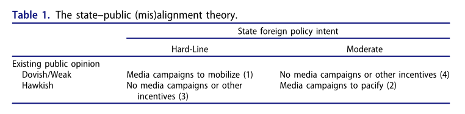
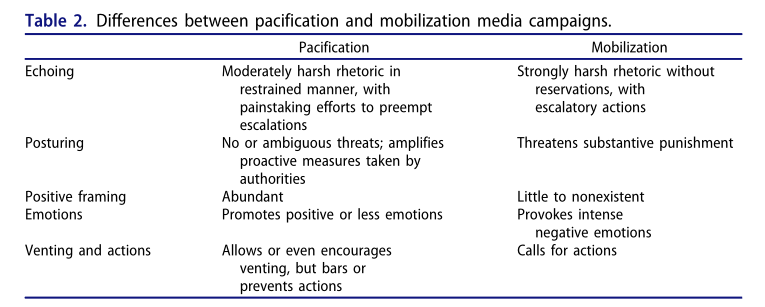
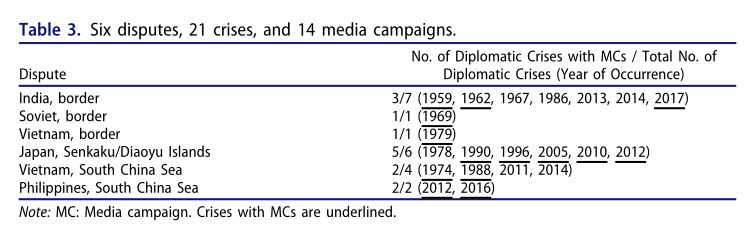
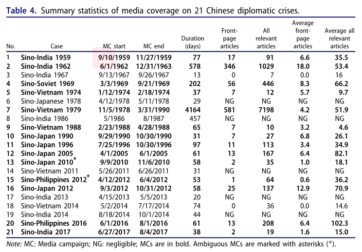
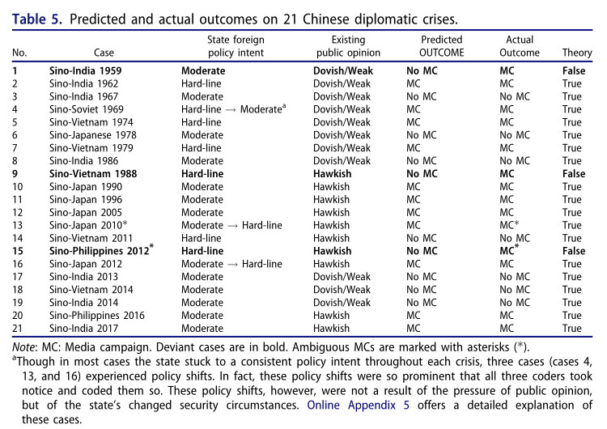
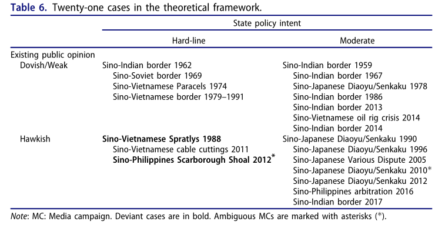
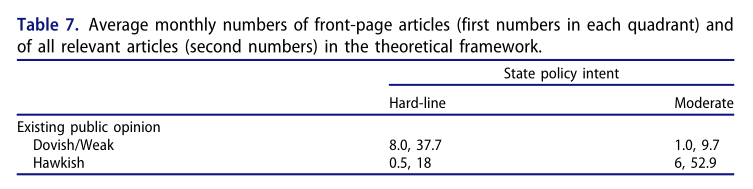

收录于合集

吠而不咬：外交政策争端中的媒体宣传
作者： Frances Yaping Wang，新加坡管理大学政治科学系副教授。
编译： 吕紫烟（国政学人编译员，山东大学东北亚学院）
来源： Frances Yaping Wang (2021) Barking Without Biting: Understanding Chinese Media Campaigns During Foreign Policy Disputes, Security Studies , 30:4, 517-549.
导读
在外交风波中，国家利用媒体进行对内宣传动员的现象十分普遍。这些宣传运动以低成本、低风险的方式塑造着民众的看法，对于维持国内社会稳定、维护国际形象等方面都有着十分重要的影响。但学者们往往过多关注媒体宣传的“动员效果”，认为媒体犀利的宣传是为推动国家对外政策服务的，这导致相对温和的“安抚效果”常常被忽视。由此，一个问题亟待解决：为什么有时候国家一方面对外采取相对温和的外交政策，一方面又对内故意用一种相对犀利的言论讨论外交争端？
为了解决这个问题，作者构建并检验了一个“错位理论”，明确提出了外交风波中国家推动的两类媒体宣传运动——“动员运动”和“安抚运动”，并着重强调了后者。本文认为，在外交争端中，国家与民众的错位是推动国家利用媒体进行对内宣传的原因。这种错位包括两类组合，即鸽派的民众舆论- 强硬的国家外交政策、鹰派的民众舆论- 温和的国家外交政策。前者对应“动员运动”，后者则对应“安抚运动”。两类运动的共同目的都是赢得民众对国家政策的支持。值得注意的是，强硬言论不一定指向“动员运动”，这似乎与我们的经验相悖。那么，强硬言辞如何起到安抚效果？文章提出了六种作用方式，这也构成了区分两类运动的标准。
本文也存在不足之处。首先，在理论构建方面过于简化。一方面，该理论将国内行为体简化为国家和民众，忽视了行为体内部的差异；另一方面，该理论将这些行为体的政策偏好简化为强硬或温和，而忽略了这两类政策偏好之间可能存在渐变、混合情况或中间道路。通过简化，该理论能够放大并清晰展现国家与公众在外交政策中的相互作用，但也给该理论留下了提升空间，特别是对于细节的处理方面。其次，本文关于媒体报道数量和显著性的数据主要来源于《人民日报》，单一报纸的选取降低了搜集和处理数据的难度，但也影响了研究结论的广泛性。未来研究可以考虑扩大样本的数量，同时尝试将该理论应用于检验其他国家的相关案例。
摘要
在外交政策争议期间，中国媒体宣传的动机是什么，它们是如何进行的？本文发展并检验了一个理论， 该理论认为这些媒体运动是当国内公众舆论偏离国家偏好的外交政策时，利用媒体的动员或安抚作用来调整国内舆论的战略行动。 不同的媒体效应分别对应两种媒体运动——动员运动与安抚运动。安抚运动尤为重要，它表明强硬言论反而可能起到安抚公众的效果，因此该战略指向的外交政策意图是温和的。对21个中国外交典型案例的一致性测试，为该理论提供了强有力的支持，并证明了安抚运动如何发挥作用以及其与动员运动的区别。
编译
国际关系的一个重要维度是在外交争端中，国家如何利用媒体宣传来塑造国内舆论。 但奇怪的是，犀利的媒体宣传并不总是发生在强硬的政策环境中。
这些媒体宣传运动提出了两个难题。首先，与通过信息管理来平息争端、降低公众关注度相比， 为什么国家有时会选择在国内宣传中重点讨论国际危机和外交事件？ 其次，如果媒体宣传对国家的主要作用是煽动民族主义，为强硬政策争取支持， 那么如何解释外交政策目标温和情况下犀利的媒体宣传？ 本文旨在解决这些难题。在解决第一个问题时，作者描述了这些宣传运动发生的原因——即条件和动机。在解释第二个问题时，作者描述了这些运动的表现和运作方式。本文介绍了两种运动类型：动员运动和安抚运动，并重点关注相对委婉的安抚类运动——吠而不咬。
本文认为，为了国内政权和国际安全，国家利用媒体宣传使公众舆论与其偏好的外交政策保持一致。两种类型的错位（misalignment）可以激发媒体宣传运动，具体会产生哪种运动则取决于国家和公众如何错位。当舆论比国家政策温和时，国家会采取动员运动来动员公众。当舆论比国家政策强硬时，国家就通过安抚运动来安抚公众。两者都是为了获得公众对国家偏好政策的支持或默许。当国家和公众一致时，国家喉舌会保持安静。本文分析了21个中国外交案例，其中18起符合上述假设，显示出压倒性符合理论预期的结果。官方媒体对不一致案例的平均报道明显比一致案例更为突出和广泛。
宣传的安抚作用值得重视，因为这不是我们通常所理解的激进的对外宣传方式。民众和学者经常将激进的宣传解读为激进政策意图的线索。如果安抚运动真的很普遍，那么这种错误知觉可能会使我们误解强硬言论背后的意图。
强硬的言论也可以安抚公众。 安抚运动通过话语控制、用看似强硬的言辞响应公众情绪、保持强硬立场、正面报道、消除“有害”情绪的合法性以及让公众在社交媒体上发泄来安抚公众舆论。国家深知这个 “公开的秘密” ，并多次利用强硬的媒体宣传来安抚国内舆论。在试图解读国家的外交政策意图时，我们需要记住，国家可能会利用媒体宣传来清除国内障碍，以缓和局势。
01
国家-民众的一致/错位
本文将媒体运动定义为政府精心策划的协同努力，以利用大众媒体吸引公众对争议的关注，表现为媒体对该问题的报道数量和显着性急剧增加。
本文认为媒体宣传是一种国家战略行动，作为对两个条件是否一致的回应。一个是 国家的外交政策意图， 是该国在外交危机中针对外国对手的外交政策，可以被描述为强硬或温和。本文将强硬政策定义为无端威胁、展示或使用武力、经济制裁、在被激怒时升级反应。温和的政策包括和平谈判，妥协、不作为，或在被激怒时做出同等或较小规模的反应。
另一个条件，即 当前舆论， 是在国家做出反应之前，公众对外交危机中外国对手当前的政策偏好。当前公众舆论可以分为三类：强烈的强硬偏好（鹰派）、强烈的温和偏好（鸽派）、弱偏好或无偏好（对某个问题知之甚少或持冷漠态度）。
因此，国家与社会的错位只发生在两类组合中：（1） 鸽派舆论与强硬的国家政策偏好 （表1中的情况1）；（2） 鹰派舆论和温和的国家政策偏好 （情况2）。这两种情况产生了两种不同类型的媒体运动。一种是动员运动：在鸽派舆论情况下，国家倾向于采取强硬政策；另一种是安抚运动：当国家支持温和政策，但现有舆论偏鹰派。这些媒体运动在舆论上的作用方向相反，但它们都有助于获得公众对国家期望政策的支持或默许。当国家政策意图和公众舆论保持一致时（情况3和4），应该没有媒体宣传运动。

国家与公众的错位激发了媒体运动。这种错位造成了政治紧张局势，因为执行不受公众支持的外交政策对于政权而言具有政治风险，且代价高昂。如果管理不善，舆论可能会挑战国内政权和国际安全。在国内，舆论可能以社会动荡的形式削弱政权，破坏社会信任和政权合法性。在国际，如果外交政策受制于国内舆论，尤其是极端民族主义，可能会导致不利的外交政策，威胁国家安全环境。民众的暴力反应会破坏经济联系，损害一个国家的国际形象，并将外交政策限制在次优选择上。这就是为什么我们不应该期望看到国家轻易屈服于舆论压力，特别是如果国家可以选择通过媒体宣传来调整舆论。调整目标不一定是扭转观点或达成完全一致，但可以创造足够的趋同或理解。
02
具有安抚作用的鹰派言论
一般而言，动员运动旨在提高公众意识和问题的重要性，鼓励对目标国家或人民的负面评价和强烈的负面情绪，营造不公正和不公平感，从而为使用武力获得道德上的许可，淡化冲突的潜在成本，并鼓励对目标国家或人民采取行动。安抚运动也提高了公众意识和问题的突出性，但在其他方面与动员运动具有明显不同。本文重点关注安抚运动。
为了安抚舆论，国家可以选择以下两种措施： 一种是禁止性的硬权力 ，包括封锁整个网站、自动封锁关键词、手动删帖、促进自我审查、或使用审查制度来显示权力或统治； 另一个是具有说服力的软权力 ，包括伪草根运动（astroturfing）、情绪遣散、数字改造。尽管国家通常会采取安抚运动，但软性安抚正在成为一种更好的选择。
本文提出了媒体运动发挥安抚作用的六种方式：指示话语、呼应公众情绪、“装腔作势”的强硬、正面报道、取消“无益”情绪的合法性以及让公众发泄。
第一种方式，指示话语。 安抚运动通过大量、及时、频繁地发布权威信息，主动回应事态发展来帮助国家获得话语权。安抚运动通过赋予国家“首因效应”(primacy effect)的优势，塑造公众舆论。
第二种方式，呼应公众情绪，表现为刺激性的媒体内容。 官方媒体呼应了公众的感受，因此表明政府与公众“有联系”。民众和国家（至少在表面上）享有共同的立场和情感，这有助于构建传播观点所需的社会信任。呼应还可以通过代表民众表达愤怒来实现安抚，并间接帮助公众泄愤。但这种呼应不同于动员运动中的煽动性言论。在安抚运动中，一个国家努力避免进一步激怒民众。它需要在呼应和不抵消其政策目标之间取得微妙的平衡。国家可以通过采用与公众情绪差一档的“适度强硬”言论来做到这一点。以当前舆论为基准，国家的言论在动员运动中更为严厉，而在安抚运动中则较为温和。此外，国家还可以从第三方的角度谴责对手，或将呼应归于非官方媒体。
第三，除了呼应，刺激性内容也有助于在提高民众对国家对外政策的信心。 因为民族主义者经常将温和的外交政策等同于软弱和失败，所以保持强硬立场可以保护政府免受民族主义者批评，挽回面子，维护社会稳定。为了防止不必要的升级，这种“装腔作势”的强硬姿态没有威胁动员运动中常见的实质性惩罚，或用模糊的威胁来替代。这样既放大了国家采取的主动性措施，显示出国家在维护国家利益方面的能力，也有助于转移批评并增强对政府的信心。归根结底， 安抚运动的目的是为了满足和安抚愤怒的公众，也是为了减少公众对克制政策的抵触情绪。 “装腔作势”并不一定会阻碍一个国家以后推行温和外交政策的能力。 舆论的宽恕和健忘 使国家可以利用强硬姿态来保护自己免受民族主义的批评，同时又不损害其温和的政策目标。
第四，正面报道，仔细微调信息，以鼓励合作并阻止民众的异议，防止可能威胁政权的暴力或集体行动。 国家选择正面报道，用积极的语言，引发积极的情绪，并鼓励亲政府、支持现状和反暴力的信息。这有助于克服潜在的破坏性对话，并引导公众舆论远离暴力和反抗。正面报道作为强硬言论的重要补充，服务于呼应和“装腔作势”的目的，起到平衡作用，并引导公众舆论。
第五，消除“无益”情绪的合法性与正面报道相结合。 媒体框架被建立起来，用以通过培养对暴力和社会动荡的厌恶来消除负面情绪，并宣扬理性和爱国主义的崇高道德基础。此外，媒体努力强调温和外交政策的优点和强硬政策的代价。安抚运动中使用的情绪及其强度与动员运动明显不同。动员运动会引发强烈的负面情绪，例如仇恨或恐惧，而安抚运动只会与轻微的负面情绪相呼应，例如不公正或蔑视。动员旨在强化情绪，而安抚则使情绪缓和。安抚运动还花费大量精力来诱导积极情绪，例如感激和满足，并利用积极情绪或理性（接近无情绪）来中和消极情绪。 安抚类似于去安全化， 是安全化的反向过程。安抚言论通常涉及提供大量详细事实的调查性新闻，通过成本效益分析进行推理，并引用专家意见来声称知识权威。
最后，在社交媒体上表达观点直接释放了民众的情绪。 “微博利用碎片化的帖子来释放社会压力……让人们发表意见”，避免社会的压力积累。 动员运动呼吁公众行动，而安抚运动通过允许甚至鼓励情绪释放，并以各种方式阻止行动。 国家通常允许谴责外国对手，只要停留在纸面上。
通过这六种方式，媒体运动安抚民族主义的民众，并安全地获得公众对温和外交政策的默许或支持。只有第一种方式——指示话语在动员和安抚运动中都很常见，其余五种方式则将两者区别开来。这些差异总结在表2。

03
限制条件和范围
目前为止，我们的讨论提出了三个安抚的范围条件：（1）如果国家实施不受支持的外交政策，它会付出代价，但国家有能力通过操纵舆论来避免这种代价；（2）缺乏有效的替代方案，审查制度失去了过去的万能作用；（3）安抚需求的上升——国家培养民族主义作为巩固政权合法性的一种手段，促成许多国家民族主义的兴起。
04
在外交风波中检验理论
表3列出的案例包括了自1949年新中国成立以来，中国在国家间领土争端中卷入的所有外交风波。中国在其中14起案件中发起了媒体宣传。

将官方媒体视为代理人，作者通过计算中国最权威的官方报纸《人民日报》的相关文章数量来衡量因变量，即媒体运动的采用/不采用。为此，作者收集了1949年至2017年间人民日报的所有文章，涵盖了中国围绕6个领土争端发生的共21次外交风波。统计每月头版文章的数量以及所有相关文章的数量，这两个数字分别对应报道的显着性和报道量，作为衡量媒体报道规模的重要指标，随后按照6个争议的时间线进行统计。表4显示了共21个案例的媒体报道汇总统计数据。作者对每个运动的持续时间、头版文章数量和所有相关文章数量以及它们的月平均值进行了分类。

如果考虑、激励或推行以下政策之一，则将其编码为 强硬： （1）威胁、展示或使用武力；（2）威胁或使用经济制裁；（3）被激怒后，采取更大规模或更激烈的反应。如果以上都不是，而是经过深思熟虑、鼓励或追求以下政策，则将其编码为 温和： （1）妥协；（2）不作为；（3）被激怒后，采取同等或较小规模的微弱反应。遵循对国家政策偏好的相同定义，作者通过公众舆论是否被感知、直接衡量或推断为鹰派或鸽派来衡量另一个 自变量 ——当前公众舆论。本文通过将测量和数据的时间控制在“危机之前或开始时”来梳理出真正的公众舆论，以便它们优先于任何政府制定的媒体策略。表5显示一致性检验结果。

表6将21个案例放入理论框架中，然后评估每个情况的一致性测试结果。如图所示，右下象限的七个安抚案例都被正确预测，它们都发生在21世纪，暗示着一种当代关联性。左上象限的四个动员案例也都被正确预测。右上象限的鸽派舆论- 温和政策情景有1/7的异常情况，左下象限的鹰派舆论- 强硬政策情景有1/3预测错误的案例。在鹰派公众舆论和强硬国家政策的情况下，受众成本理论的解释可能更合理，更容易将观众成本与鹰派公众联系起来。

表7通过平均每个情况中的文章数量来总结测试结果。相对于一致的情况，在错位的情况中媒体曝光的显着性和数量的都明显提高，这证实了错位和媒体报道之间的相关性。

05
启示
本文解释了国家为何以及如何在外交争端期间发起媒体宣传。作者提出并测试了一种“错位理论”，并描述了两种不同类型的宣传，尤其是安抚运动。作者认为，各国通过媒体宣传要么动员鸽派的公众舆论以支持强硬的外交政策，要么安抚鹰派的公众舆论以允许采取温和的外交政策。
有必要区分安抚言辞和动员言辞。安抚运动用看似严厉的言辞，提高公众意识并强调争议，但它们只是起到呼应和“装腔作势”的目的；与动员运动的极端强硬相比，安抚运动的言辞比公众情绪更温和、更内向，放大了政府维护国家利益的努力和能力。安抚运动还采用正面报道来平衡用于呼应和装腔作势的刺激性言论，削弱暴力或不稳定社会情绪，鼓励积极情绪，例如民族自豪感、理性思维或客观主义，并允许甚至鼓励在社交媒体上发表意见，但禁止付诸行动。
随着数字时代的到来和技术的不断进步，安抚运动会变得更加普遍。未来研究应该探索该理论对更多国家的适用性。
词汇积累
动员运动 mobilization campaigns
安抚运动 pacification campaigns
错位理论 misalignment theory
草根营销，伪草根运动 astroturfing
首因效应 primacy effect
审校 | 郑敖天 李博轩
排版 | 柴昕彤 廉梦瑶
文章观点不代表本平台观点，本平台评译分享的文章均出于专业学习之用, 不以任何盈利为目的，内容主要呈现对原文的介绍，原文内容请通过各高校购买的数据库自行下载。

国政学人
支持学术公益与知识传播
微信扫一扫赞赏作者 __赞赏
已喜欢，对作者说句悄悄话
取消 __
发送给作者
发送
最多40字，当前共字
上一页 1/3 下一页
长按二维码向我转账
支持学术公益与知识传播
受苹果公司新规定影响，微信 iOS 版的赞赏功能被关闭，可通过二维码转账支持公众号。